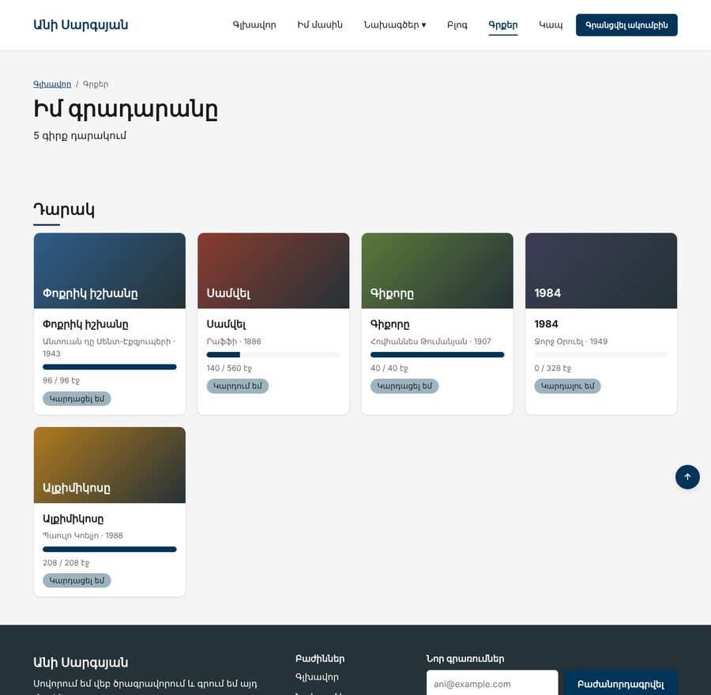

Տնային աշխատանք · JS Դաս 09 · մինի-նախագիծ
Օրագիրը տեղափոխվում է Անիի կայք՝ HTML/CSS բլոկի նույն կայքը, որ նա կառուցեց 21 դասում։ Նոր էջ՝ «Գրքեր», հինգ ստատիկ քարտով։ JS-ը դեռ ոչինչ չի փոխում․ միայն կարդում է էջը և պատասխանում հարցերին Console-ում։
Դաս 01–09․ querySelector, querySelectorAll, [...NodeList], textContent, closest, children, nextElementSibling, ?.։ Էջը փոխելը՝ Դաս 10-ում։

Ահա ինչ պետք է տեսնես Console-ում։ Ձևակերպումները կարող են տարբերվել, թվերը՝ ոչ։
Console
Էջ՝ Իմ գրադարանը
Բաժիններ՝ 2, .row՝ 5
Գրքեր դարակում՝ 5
Վերնագրեր՝ ["Փոքրիկ իշխանը", "Սամվել", "Գիքորը", "1984", "Ալքիմիկոսը"]
Ընդհանուր՝ 1232 էջ, կարդացել եմ՝ 484 (39%)
Ամենամեծը՝ Սամվել
1. Փոքրիկ իշխանը — Կարդացել եմ
2. Սամվել — Կարդում եմ
3. Գիքորը — Կարդացել եմ
4. 1984 — Կարդալու եմ
5. Ալքիմիկոսը — Կարդացել եմ
Կարդացել եմ 3 գիրք
Առաջին քարտի մարմնում՝ 5 էլեմենտ՝ ["H3", "P", "DIV", "P", "SPAN"]
Քարտը գտնվում է section#shelf-ում
Երկրորդ քարտը՝ Սամվել
Գնահատական՝ null
Գնահատականի տեքստը՝ դեռ չկա (կավելացնենք Դաս 12-ում)
Աշխատիր Բլոկ 1-ի քո կայքի պատճենում։ Եթե այն չունես, վերցրու Բլոկ 1-ի Դաս 21-ի օրինակը։
starter/css/books-09.css — CSS-ը, որ ավելանում է այս դասինstarter/pages/books.html — «Գրքեր» էջի markup-ը (JS չկա, միայն <script>-ները)pages/books.html՝ starter/-ից։ Header-ում՝ նոր կետ «Գրքեր» բոլոր էջերումstarter/css/books.css-ից main.css-ի վերջում (ադապտիվությունից առաջ)<script src="../js/books.js" defer>[...querySelectorAll(...)].map(...)Number(el.textContent)const pages = [...document.querySelectorAll(".book__pages")].map(el => Number(el.textContent));books.forEach(book => book.querySelector(...))՝ վերնագիր և կարգավիճակ.book__body-ի երեխաների քանակը և tagName-երըclosest("section"), nextElementSibling.book__rating-ը դեռ չկա։ Տպիր null-ը և ապահով կարդա ?.textContent ?? "..."| Սխալ | Ինչպես ուղղել |
|---|---|
Cannot read properties of null | Սկրիպտը կատարվում է HTML-ից առաջ․ defer (Դաս 9) |
map is not a function | NodeList-ը զանգված չէ․ [...nodeList].map |
| Գումարը «96560...» է | textContent-ը տող է․ Number() |
| Կայքի այլ էջերում «Գրքեր» չկա | Header-ը կրկնվում է ամեն էջում․ փոխիր բոլորը (PHP բլոկում՝ մեկ ֆայլ) |
Սրանք Դաս 09-ի տնային աշխատանքի կետերն են։ «մինի-նախագծում» նշվածները արդեն կատարել ես վերևի քայլերում, մնացածը կատարիր առանձին ֆայլերում։
h1-ը և տպիր դրա տեքստը։ մինի-նախագծումsection, քանի .row և քանի .col կա էջում։ մինի-նախագծումh2-ների տեքստերը զանգվածով (օգտագործիր [...] և map)։ մինի-նախագծում.col-ը և տպիր դրա ներսի ամբողջ տեքստը։.wrapper-ը։ Տպիր դրա երեխաների քանակը և ամեն երեխայի tagName-ը։ մինի-նախագծումclosest-ով գտիր դրա section-ը։ Տպիր section-ի դասը։ մինի-նախագծում.col-երով և ամեն մեկի ներսում գտիր վերնագիրը՝ col.querySelector(...)։ մինի-նախագծում?.-ով։ մինի-նախագծումdefer-ը <script>-ից և տես, թե ինչ է լինում։ Գրիր մեկնաբանության մեջ՝ ինչ սխալ ստացար։ Հետո վերադարձրու։Երբ բաժին 03-ի բոլոր կետերը նշված են, բացիր օրինակը և դրա կոդը example/js/-ում։ Գտիր մեկ բան, որ դու արել ես այլ կերպ, և մտածիր՝ որն է ավելի հասկանալի և ինչու։ Քո լուծումը կարող է տարբերվել և լինել ճիշտ։